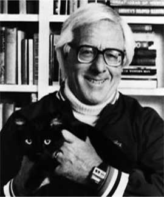
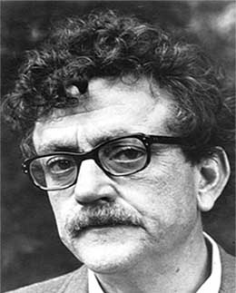
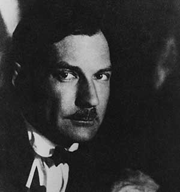
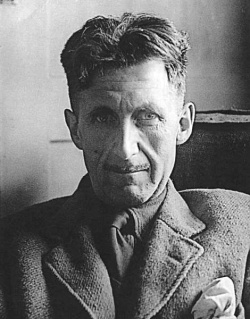
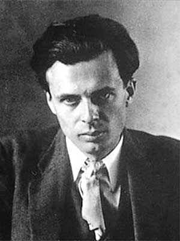

Плеяда нижеупомянутых авторов прославилась своими хирургически точными операциями над укладом современного им общества с целью показать неправильности и неестественности, а также указать, куда это ведёт, и как это будет выглядеть в будущем. Каждый из вышеперечисленных джентльменов делал это по-своему. Знакомство с подобным творчеством это хороший толчок для формирования картины социума. Каждая из описанных утопий содержит элементы современного Нам социального строя, как каждая шутка содержит долю правды.
Рэй Брэдбери
Брэдбери нельзя назвать классическим антиутопистом, ибо его творения варьировались в разных диапазонах: от нежной летней романтики, чудесно переносящей тебя в детство (Вино из Одуванчиков) до сборников магических рассказов о коротких городских происшествиях (Марсианские хроники). Что касается его критичного взгляда на возможное будущее мира, он воплотил его в книге "451 градус по Фаренгейту". В романе описывается будущее, где книги сжигаются по причине того, что они вызывают процессы мышления, а это нежелательно в мире, где общество контролируется через поглощение развлечениями, а люди проводят всё своё время в комнатах, где вместо стен - огромные телевизионные экраны. Метко и атмосферно, роман развивается постепенно, но вскоре набирает скорость. Брэдбери определенно оказал на меня влияние в детстве: читал его в районе 10 лет. Его книги переполнены добротой и пониманием того, что на самом деле важно: прикосновение бабушки, солнце на щеке, любимая тропинка в лесу, книги, а не телек, чувства, а не бессмысленная развлекуха.
Вино из Одуванчиков (1957)
Первое, что узнаешь в жизни, — это то, что ты дурак. Последнее, что узнаешь, — это что ты все тот же дурак.
451 Градус по Фаренгейту (1953)
Трудно сказать, в какой именно момент рождается дружба. Когда по капле наливаешь воду в сосуд, бывает какая-то одна, последняя капля, от которой он вдруг переполняется, и влага переливается через край, так и здесь в ряде добрых поступков какой-то один вдруг переполняет сердце.
Устраивайте разные конкурсы, например: кто лучше помнит слова популярных песенок, кто может назвать все главные города штатов или кто знает, сколько собрали зёрна в штате Айова в прошлом году. Набивайте людям головы цифрами, начиняйте их безобидными фактами, пока их не затошнит, ничего, зато им будет казаться, что они очень образованные. Крутите человеческий разум в бешеном вихре, быстрей, быстрей! — руками издателей, предпринимателей, радиовещателей, так, чтобы центробежная сила вышвырнула вон все лишние, ненужные, бесполезные мысли!..Прежде всего работа, а после работы развлечения, а кругом сколько угодно, на каждом шагу, наслаждайтесь! Так зачем же учиться чему-нибудь, кроме умения включать рубильники, завинчивать гайки, пригонять болты? Не с каких-либо предписаний это началось, не с приказов или цензурных ограничений. Нет! Техника, массовость потребления — вот что привело к нынешнему положению.
Курт Воннегут
Курт Воннегут для меня что-то вроде импрессионистов среди художников: нестандартная манера изложения и сюрреалистические сюжеты. В книге Механическое пианино Воннегут спекулирует на тему того, что в будущем самые главные решения будут принимать машины, а люди и их творчество станут неважными элементами и без того работающей системы. Колыбель для кошки - вторая вещь, мной прочитанная, составляет по сути сборник афоризмов и премудростей, изложенных неким островным мыслителем. Каждая глава книги начинается с очередной идеи об устройстве мира (весьма своеобразной формы). При этом присутствует сюжет, косвенно связанный с этим островным мудрецом, но придуманный будто просто так, чтобы был. Книги Воннегута изобилуют юмором и касаются противоречивых идей. Его главные герои, от лица которых ведется повествование, наделены богатой фантазией и не чужды иронии. Прекрасное чувство юмора автора - одна из причин ознакомиться с его книгами.
Колыбель для Кошки (1963)
Предложение неожиданных путешествий есть урок танцев, преподанных Богом.
Евгений Замятин
Евгений Замятин - Мы. Точно помню, что эта книга входила в школьную программу и именно поэтому я о ней и узнал. Если бы я умел рисовать, то с гораздо большим удовольствием нарисовал бы что я думаю о этой книге, чем облекал бы это в слова :) Тем не менее, попробую: это ярчайший, до слепоты, крик против идеи советского союза в смысле убийства индивидуальности, это сильнейший поток мыслей и чувств, кидающий раскаленно белый луч света на ужасное и противное природе положение вещей, которое готовилось сложиться в стране (Замятин написал роман в 1920 году). "Мы" оставляет очень сильное впечатление и особенно актуальна для нас, потомков того строя. Этот роман описывает общество жёсткого тоталитарного контроля над личностью (имена и фамилии заменены буквами и номерами, государство контролирует даже интимную жизнь), идейно основанное на превознесении науки и отрицании фантазии.
Плохо ваше дело! По-видимому, у вас образовалась душа.
— доктор в Медицинском Бюро
Душа? Это странное, древнее, давно забытое слово.
— Д-503
Джордж Оруэлл
Оруэлл. Пожалуй, самый известный из антиутопистов; был вдохновлен Замятиным. Идея "Большого Брата", вечно следящего за тобой - плод его трудов. Оруэлл видел будущее мира в тоталитарных красках: мысли людей строго контролируются масс медиа, подвластных государству, всеобщая слежка и доносительство, невозможность существования альтернативной точки зрения, перепись истории, коверканье и изменение фактов, в общем, своего рода картина советского строя (и не только советского, не так ли?). Люди, способные к критическому взгляду тут же либо вербуются на условиях шантажа и угроз, либо просто уничтожаются. В таком обществе свобода человека отрицается и преследуется, сводится на нет глобальной диктатурой. Роман "1984" представляет собой описание будущего, построенного на вышеописанных постулатах. Главный герой работает в так называемом Министерстве Правды (одно уже название даёт представление о положении вещей), и по мере книги он начинает осознавать жуткость системы и желать изменений, при этом продолжая притворяться идейным последователем режима. Большой Брат же рисуется в виде черноусого мужчины средних лет, и в нём легко угадывается прообраз Сталина. Еще один известный роман автора - Скотный двор - являет собой потрясающую, наполненную иронией аллегорию на события 1917 года и следующий за этим политический расклад. Только вот персонажи книги - животные. Опять же, Джордж мастерски критикует глупость, жажду власти, насилие, и прочий дебилизм.
Скотный Двор (1945)
Все животные равны. Но некоторые животные более равны, чем другие.
1984 (1949)
Лучшие книги говорят тебе то, что ты уже сам знаешь.
Война — это способ разбивать вдребезги, распылять в стратосфере, топить в морской пучине материалы, которые могли бы улучшить народу жизнь и тем самым в конечном счёте сделать его разумнее.
Олдос Хаксли
Олдос Хаксли был представителем высшего общества Англии, элиты. Семья Хаксли по обеим линиям на протяжении столетий давала миру выдающихся ученых, писателей и общественных деятелей. Во время учебы в Оксфорде по специальности "английская литература", Олдос входил в известный Блумсберрийский кружок, который вдохновлял и включал в себя таких людей, как Кейнс, Мур, Рассел. Кружок основывался на отрицании буржуазных ценностей, его члены проповедовали пацифизм, гуманизм, развивали взгляды на место женщины в мире, а также сексуальность. Закончил университет Хаксли с наивысшим дипломом, после чего ему моментально предложили должность профессора (!), от чего он отказался, сославшись на однобокость и ограниченность образовательной системы Англии. Олдос на протяжении своей жизни написал десятки научных работ и эссе в различных областях, но в основном двигал за пацифизм, универсализм, гуманизм, а во второй половине жизни переплетал в своих работах элементы восточной философии, увлекался ведантой и мистикой. Работа, принесшая ему мировую известность, "Дивный новый мир", пока остается мной непрочитанной (хоть основная идея и ясна), тогда как влияние на меня оказали книги "Контрапункт", "Двери восприятия" и "Остров".
Контрапункт (1928)
"Контрапункт" - это мастерский срез высшего общества Англии, книга пропитанная иронией да и просто откровенной насмешкой над укладом нравов и мыслей окружения Хаксли. В книге рассказ ведётся от третьего лица, вернее лиц, каждое из которых - экземпляр той или иной слабости: глупости, тщеславия, похоти, испорченности, лености и скуки, малодушия или подобострастия...you name it. Удивительно, как все эти разные по форме персонажи имеют один общий корень, под названием личность. Каждый из этих испорченных людей суть извращенная версия себя самого. Порок этот - черта избалованного общества. Забавный момент в том, что читая книгу, я находил кусочки себя в каждом из этих людей. Наша задача - избавиться от этих кусочков, по сути лишь портящих нам жизнь; Хаксли умело рисует карту, по которой мы можем и должны идти.
— Никто вас не просит быть быком или собакой, — раздражённо сказал Рэмпион. — Вас просят быть только человеком. Человеком, понятно? Не ангелом и не чёртом. Человек — это акробат на туго натянутой верёвке. Он идёт осторожно, стараясь сохранить равновесие, держа в руках шест, на одном конце которого сознание, интеллект, дух, а на другом — тело, инстинкт и все, что в нас есть бессознательного, земного, непонятного для нас самих. Он старается сохранить равновесие. Это дьявольски трудно.
Если бы люди удовлетворяли свои инстинктивные потребности только тогда, когда они их действительно испытывают, подобно животным, которых вы так презираете, они вели бы себя в тысячу раз лучше, чем огромное большинство цивилизованных человеческих существ. Естественные потребности и непосредственно возникающие инстинктивные желания никогда не сделали бы людей такими скотами — нет, «скотами» не годится: зачем обижать бедных животных? — такими слишком по-человечески скверными и порочными существами. Такими делают их воображение, интеллект, принципы, традиции, воспитание. Предоставьте инстинкты самим себе, и они не причинят вам никакого вреда. Если бы люди предавались любви только тогда, когда ими овладевает страсть, если бы они дрались только тогда, когда они рассержены или испуганы, если бы они цеплялись за свою собственность только тогда, когда они действительно терпят нужду или их охватывает неудержимое желание чем-нибудь завладеть, — уверяю вас, что тогда мир гораздо больше походил бы на царствие небесное, чем теперь, при господстве христианско-интеллектуально-научного либерализма. Вы думаете, инстинкт создал Казанову, Байрона, леди Кэслмэйн? Нет, инстинкт тут ни при чем: это их похотливое воображение подстёгивало их потребности, порождало желания, которые естественным порядком у них никогда бы не возникли. Если бы донжуаны обоего пола повиновались только своим желаниям, у них было бы очень немного романов. Им приходится искусственно подогревать своё воображение, иначе они не могли бы спать с кем попало и когда попало. То же самое и с другими инстинктами. Если современная цивилизация сходит с ума на почве денег, инстинкт обладания тут ни при чем. Воспитание, традиции, моральные принципы искусственно возбуждают его. Жадность к деньгам появляется у людей только оттого, что их убеждают, будто эта жадность естественна и благородна
Инстинкт обладания никогда не был настолько сильным, чтобы заставлять людей гоняться за деньгами с утра до вечера всю жизнь. Воображению и интеллекту приходится все время подстёгивать его. А подумайте о войне. Она не имеет ничего общего с непроизвольно возникающим воинственным духом. Чтобы люди начали воевать, их нужно принуждать к этому законом, да ещё подстёгивать при помощи пропаганды.
Двери восприятия (1954)
Во второй половине жизни Олдос переезжает в Калифорнию, где развёртывает самый продуктивный свой период. Причин к этому можно назвать много, например, климат, и в целом приятный калифорнийский вайб свободного духа тех времен, но определенно среди них выделяется знакомство с индийскими учениями а также начало экспериментов с психоделическими веществами, в частности - с мескалином, активным веществом содержащемся в шаманских кактусах пейот, либо же синтезируемым химически в более чистом виде. К слову сказать, в этом эксперименте участвовал врач психотерапевт, обеспечивший само вещество, а также присмотревший за писателем после приёма. Опыт приёма мескалина Хаксли подробно описал в книге Двери Восприятия. Приведу мой перевод слов самого автора: "Мистический опыт важен вдвойне; он ценен, так как даёт приёмщику лучшее понимание себя и мира, а также потому, что помогает ему вести менее зацикленную на себе и более творческую жизнь". Книга короткая и весьма любопытная. В конце Хаксли открыто пишет, что мир стал бы в разы лучше и избавился от всех своих проблем, если бы все люди на планете хотя бы раз в жизни попробовали мескалин. By the way, любимая папина группа была названа именно в честь этой книги :)
Остров (1962)
"Остров" - это последняя книга автора, в которой явно прослеживаются влияния, впитанные Олдосом в Калифорнии. По сути, Остров - это квинтэссенция того, как автор видел правильную жизнь и общество. В книге выражены его идеи на устройство коммуны, воспитание детей, отношение к любви и сексу, восприятие мира, образовательная система, да и вообще в целом: то, как люди могут и должны жить. Это утопия, противоположная по смыслу его ранней книге "Дивный новый мир". Главный герой оказывается на острове, где люди, благодаря плодотворному влиянию определенных индивидов в прошлом и изоляции от большого мира, построили удивительно гармоничную систему и создали прекрасные условия жизни, теоретически базируясь на некого рода смеси буддизма, индуизма и научного подхода. Эта книга даёт настолько богатую пищу для ума, провоцирует движение мысли настолько плодотворно, что в итоге она натолкнула меня на изучение философии совсем друга рода: восточной. Но об этом позже :)
В натуральном виде счастье всегда выглядит убого рядом с цветистыми прикрасами несчастья. И, разумеется, стабильность куда менее колоритна, чем нестабильность. А удовлетворенность совершенно лишена романтики сражений со злым роком, нет здесь красочной борьбы с соблазном, нет ореола гибельных сомнений и страстей. Счастье лишено грандиозных эффектов.